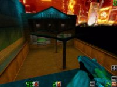

Map name: Death Avenue
Map author: T.T.I.
Map filename: avenue11.zip
Reviewed by: LTS.PooP, Computer
Review:
Hi all out there once more! LTS.PooP is back with another review. First off
this map has Death Match written all over it! It is too huge for teamplay
but, I consider, the best map for DM. Some textures i notices were ripped
from some maps I've played on before (ie. urban). This map has it all. Unlike
MidtownX, no retarted textures, the size is big. I recomment 18 players on
this map or DM. Try it out for teampaly but I don't think it will pull out
a winner for teamplay. The structure and design is excellent. The weapons
placement is very tasty! You can find what you need in some kewl spots (ie.
trunk of limmo)! The gameplay is fun because people just keep on poping from
different areas. The framerates are really nice on my 4MB 3D card. It looks
pretty kewl, though i wish people would stop using that sky texture. In my
opinion is isn't too good. It is gloomy. It has some great open spots and
I always find something new! The overall grade i give it is an A-. This should
be a big hit for the DM maps, since the few maps that have come out in the
past aren't too exciting.
-LTS.PooP
Review:
I had seent eh sentence going something like "If you thought Blockwar and
school were big then you'll be surprised" Well I am not that surprised, maybe
at the detail but not at the (large but not INCREDIBLE) size The map seems
to be teamplay and certainly DM friendly and the weapons are very nicely placed,
Lighting was well used but I feel that the orange and purple as is realisticwas
used too much making it look a little multicoloured. Actual detail/design/making
of brushes is excellent, some details are more than cool, like you can hide
in the trunk of the shotgun car in wait for the next foolish child that runs
up in glee to the closed boot and opens it, only to find - BANG!! he didn't
have time to blink. and the other things...yep I would say this map is a mix
of Subway (duh), Blockwar and midtown but not Urban, my favourite map. It
is not sniper friendly but my MP5/Laser could do some serious damage. Well
done TTI for another excellent map. I say a good 8/10
-Computer